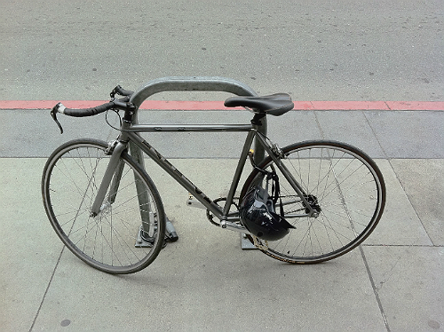

Я очень похожим образом ее себе представлял, хотя в моем соображении она была чуточку худее)) via
Пользоваться инетом с Айфона в штатах все-таки можно. Для этого надо пойти не к AT&T, у которых таки нет препейда с дата коннекшинами, а через улицу - к t-mobile. Те продадут план на месяц (голосовой и смсочный локальный анлим за $50 + $10 за анлим смски в Россию, плюс 100 мегов 3G, а потом анлим edge), обрежут симку и дадут фирменный micro sim extractor, сделанный из канцелярской скрепки.
Лучше от этого станет, но не сильно: вместо 3g у нас edge (3g с какими-то условиями, под которые мы не попадаем), да и сама связь совсем не напоминает привычный Мегафон дома - она то есть, то ее нет. Короче, полное ощущение, что ты в русской деревне, где для того, чтобы позвонить, надо сначала походить кругами вокруг да около, а потом еще и разговаривать, стоя на носочках)
Пишите, если че: +1 (415) 691 08 81.

Тут все перемещаются на совершенно офигенных велах. Я думал, где Convoy берет такие клевые велы - оказывается в Сан-Франциско!
У них тут какая-то своя модификация шоссейников — тонюсенькие колеса (ах!!!) и часто всего одна передача, как у городских.
Чувак на скучной сессии про то, как правильно дизайнить юзер интерфейсы, показал клевый айпадный апп — Architizer. Сижу вот, разглядываю архитектурные шедевры.
В этот раз:
Оказывается, "байт" по-французски будет "octets", так что килобайты и мегабайты будут Ko и Mo, соответственно :)
С большим удовольствием прочитал "Одноэтажную Америку" Ильфа и Петрова. Нашел целый ряд сходств между 1935 годом и годом 2011 (например, служба доставки товаров по каталогу в любую точку Америки за 24 часа, бесшумные лифты, отличные дороги и т.д.).
И интересно в этом, конечно же, не то, что все это существует сейчас, а-то, что все это существовало 76 лет назад! 76 лет назад бесшумный лифт поднял авторов на ЭмпейерСтейтБилдинг с такой скоростью, что у них уши заложило!
И так мило после этого (пребывая в году 2011) читать в одной из последних глав о том, что, дескать, еще неизвестно, что будет с Америкой через 50 лет, но зато с уверенностью можно утверждать какое счастливое будущее ждет через тот же период времени Советский Союз.
Отличная книжка, рекомендую!